Search sets¶
A search binary tree is defined by subclassing
CTBinaryTreeAbstract subclass: #CTUnbalancedSet
instanceVariableNames: ''
classVariableNames: ''
package: 'Containers-RedBlackSet'
and the corresponding test class defines,
"CTUnbalancedSetTest, protocol tests"
tree: aCollection
^ aCollection asUnbalancedSet
that uses
"Collection, protocol *Containers-RedBlackSet"
asUnbalancedSet
^ self asBinaryTree: CTUnbalancedSet
to show the following inspectors. First, the empty tree looks like

Second, we have the four cases:
sorted data in arrayed collection,

by means of
"CTBinaryTreeNodeUnbalanced, protocol actions" mergeBinaryTreeElement: aBTElement inBinaryTree: aBinaryTree | lesserTree greaterTree tree | self value < aBTElement value ifTrue: [ lesserTree := self. greaterTree := aBTElement ] ifFalse: [ lesserTree := aBTElement. greaterTree := self ]. tree := lesserTree nextLink mergeBinaryTreeElement: greaterTree inBinaryTree: aBinaryTree. ^ aBinaryTree leftBinaryTreeElement: lesserTree previousLink value: lesserTree value rightBinaryTreeElement: tree
sorted data in ordered collection,

by means of
"CTUnbalancedSet, protocol adding" push: anObject representation := [ :hop | representation push: anObject witness: Object new continuation: hop inSet: self ] valueWithArgumentedExit
that, first uses
"BlockClosure, protocol *Containers-Essentials" valueWithArgumentedExit ^ self value: [ :anObject | ^ anObject ]
and, second, dispatches over
"CTBinaryTreeNodeUnbalanced, protocol adding" push: anObject witness: aWitness continuation: aContinuation inSet: aBinaryTree ^ (aBinaryTree is: anObject lessThan: value) ifTrue: [ | link | link := previousLink push: anObject witness: aWitness continuation: aContinuation inSet: aBinaryTree. self class new previousLink: link; value: value; nextLink: nextLink; yourself ] ifFalse: [ | link | link := nextLink push: anObject witness: value continuation: aContinuation inSet: aBinaryTree. self class new previousLink: previousLink; value: value; nextLink: link; yourself ]
"CTBinaryTreeEmptyUnbalanced, protocol as yet unclassified" push: anObject witness: aWitness continuation: aContinuation inSet: aSet ^ (aSet is: anObject equalTo: aWitness) ifTrue: [ aSet pushingAlreadyIncluded: anObject continuation: aContinuation ] ifFalse: [ aSet binaryTreeElementLeaf: anObject ]
where the latter delegates to
"CTUnbalancedSet, protocol as yet unclassified" pushingAlreadyIncluded: anObject continuation: aContinuation ^ aContinuation value: representation
shuffled data in arrayed collection,

shuffled data in ordered collection,

Observe that the constraint of uniqueness of objects is respected,
"CTUnbalancedSetTest, protocol tests"
testPushDoubledObject
| set representation |
set := (1 to: 10) shuffled asUnbalancedSet.
representation := set representation.
self exportSlotsGraphOf: set pathSuffix: 'original'.
set
push: 1;
push: 5;
push: 10.
self assert: set representation equals: representation.
set push: 0.
self deny: set representation equals: representation.
^ self exportSlotsGraphOf: set pathSuffix: 'augmented'


Note
According to the exercises 2.3 and 2.4 of [Oka98], the
underlying linked structure isn’t doubled as the second assert checks, by
means of the context-return block passed at the start of a push: and
invoked in the leaves in case of doubles.